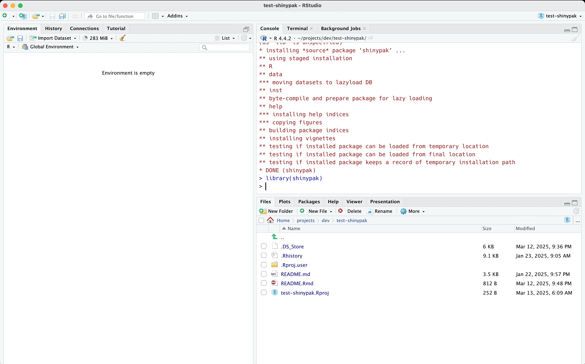
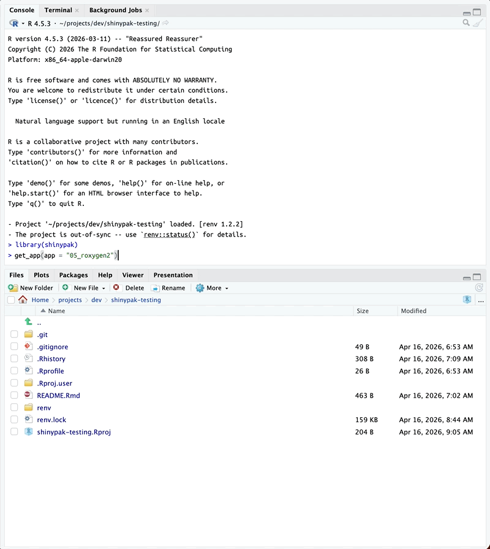
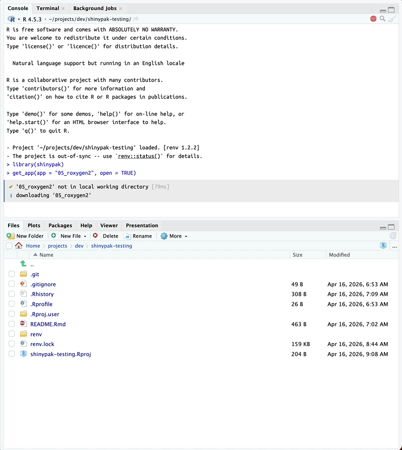

shinypak is a supplemental package for the Shiny App-Packages
book. It’s functions are designed to give readers of the book quick
and easy access to the app-packages so they can follow along.
Authentication
shinypak assumes you have GitHub and RStudio (or
Positron) synced. Read more about setting this up on the gert
package website
“In
gert, authentication is done automatically using thecredentialspackage. This package calls out to the local OS credential store which is also used by the git command line. Thereforegertwill automatically pick up on https credentials that are safely stored in your OS keychain.”
Workflow
After authenticating with GitHub, a typical workflow with
shinypak would be:
- Install and load the package
install.packages('pak')
pak::pak("mjfrigaard/shinypak", force = TRUE)Find an example application in a chapter to follow along with (we’ll use
02.3_proj-app).Find the application in the look-up table with
list_apps(). You can specify aregexto return a table of branches matching a particular chapter or topic:
list_apps(regex = "^02.3")
#> branch last_updated
#> 5 02.3_proj-app 2025-03-11 13:43:18
list_apps(regex = "proj-app")
#> branch last_updated
#> 5 02.3_proj-app 2025-03-11 13:43:18- To launch an app from the Shiny App-Packages
book, you can supply the name of the branch to
launch():
launch(app = "<branch>")- For example, The
02.3_proj-appbranch is from the early chapters of Shiny App-Packages (i.e., the app is not quite an app-package yet):
launch(app = "02.3_proj-app")-
launch()will check if the application has already been downloaded, download the application files into a folder in the current working directory, then launch the app: If the branch is storing an app-package,
launch()loads the package and then launches the application:

- If you’d prefer to download the application without launching it,
you can call the
get_app()function and the specified branch and application will be downloaded into the current working directory:
get_app(app = "05_roxygen2")
- You can open the new app project by supplying the
open = TRUEargument:
get_app(app = "05_roxygen2", open = TRUE)
- If the app is already downloaded, the files are updated with the latest commit to the branch.
Helper
The is_r_package() function is useful for determining if
a directory contains an R package. Consider the three folders below:
If the folder contains an R package, is_r_package()
returns TRUE.
is_r_package(path = system.file("pkg", package = "shinypak"))
#> ✔ '/home/runner/work/_temp/Library/shinypak/pkg' is an R package (DESCRIPTION found, no .Rproj)
#> [1] TRUEIf the verbose argument is set to TRUE, the
details are printed on what is being checked:
is_r_package(
path = system.file("pkg", package = "shinypak"),
verbose = TRUE)
#> ✔ Package found!
#> ✔ Version found!
#> ✔ License found!
#> ✔ Description found!
#> ✔ Title found!
#> ✔ Author found!
#> ✔ Maintainer found!
#> ✔ '/home/runner/work/_temp/Library/shinypak/pkg' is an R package (DESCRIPTION found, no .Rproj)
#> [1] TRUEThis can be used to quickly determine if a folder contains an R
package or Shiny app (and what is missing). Consider the
app folder (with a DESCRIPTION and
.Rproj file).
is_r_package(
path = system.file("app", package = "shinypak"),
verbose = TRUE)
#> ✖ Package not in DESCRIPTION!
#> ✖ Version not in DESCRIPTION!
#> ✔ License found!
#> ✖ Description not in DESCRIPTION!
#> ✔ Title found!
#> ✔ Author found!
#> ✖ Maintainer not in DESCRIPTION!
#> ✖ '/home/runner/work/_temp/Library/shinypak/app' is not an R package (invalid DESCRIPTION, no .Rproj)
#> [1] FALSEThis tells is app has fields missing from the
DESCRIPTION and the .Rproj isn’t configured
with RStudio’s build tools.
Lookup Table
topic_lookup connects branch,
part, and chapter:
topic_lookup| branch | part | chapter |
|---|---|---|
| 02.1_shiny-app | Intro | Shiny |
| 02.2_movies-app | Intro | Shiny |
| 02.3_proj-app | Intro | Shiny |
| 03.1_description | Intro | Packages |
| 03.2_rproj | Intro | Packages |
| 03.3_create-package | Intro | Packages |
| 04_devtools | Intro | Development |
| 05_roxygen2 | App-packages | Documentation |
| 06.1_exports | App-packages | Dependencies |
| 06.2_imports | App-packages | Dependencies |
| 07_data | App-packages | Data |
| 08_launch | App-packages | Launch |
| 09_inst | App-packages | External files |
| 10_debugger | Debugging | Debugging in Positron/RStudio |
| 11_debug-print | Debugging | Print debugging methods |
| 12.1_debug-mods | Debugging | Debugging modules |
| 12.2_mod-comms | Debugging | Debugging module communication |
| 13_logging | Debugging | Logging app behaviors |
| 14_tests_suite | Tests | Building testthat test suite |
| 15_specs | Tests | Test specifications |
| 16.1_test-help | Tests | Using ensure to help write tests |
| 16.2_test-data | Tests | Storing and using test data |
| 16.3_test-logger | Tests | Writing a test logging helper function |
| 16.4_test-snapshots | Tests | Test snapshots |
| 17_test-modules | Tests | Testing modules |
| 18_test-system | Tests | System tests |
| 19_shinyappsio | Deploy | Deploy to shinyapps.io |
| 20_docker | Deploy | Deploying with Docker |
| 21.1_gha-style | Deploy | Deploying with GitHub Actions (styling code) |
| 21.2_gha-shiny-deploy | Deploy | Deploying shiny app with GitHub Actions |
| 21.3_gha-shiny-docker | Deploy | Deploying shiny app with Docker and GitHub Actions |
| 22_pkgdown | Deploy | Deploying a package website |
| 23_golem | Frameworks | golem framework |
| 24_leprechaun | Frameworks | leprechaun framework |
| 25_rhino | Frameworks | rhino framework |
| 26_llm-shiny-assist | Shiny & LLMs | LLMs with Shiny Assistant |
| 27_llm-ellmer | Shiny & LLMs | LLMs with ellmer package |
| 28_llm-chores | Shiny & LLMs | LLMs with chores package |
| 29_llm-gander | Shiny & LLMs | LLMs with gander package |
| 30_llm-btw | Shiny & LLMs | LLMs with btw package |